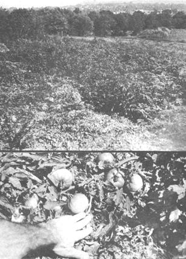

Harvest The Roadside Bonanza
Read how Roe visits his farm (unoccupied land within walking distance) to harvest free-for-the-picking produce and select whatever's in season.
By Richard Roe
July/August 1972
Sheep sorrel, purslane, wild mustard and a hundred other wild plants may be good eating . . . but my taste runs to more familiar fare: asparagus and rhubarb in May; cherries in June; red and black raspberries in July; blackberries in August; elderberries, pears, peaches, plums and grapes in September; pumpkins in October; tomatoes and squash from July until frost and apples from July 'til November.
Does this mean I buy not-so-fresh fruits and vegetables from the supermarket or try to raise them all in my small garden? Not at all. I simply visit my "farm" of free-for-the-picking produce and select whatever's in season.
That "farm" is all the unoccupied land within walking distance of a city of 30,000 population in southeastern Ohio . . . and "unoccupied" does not mean without ownership. It means the curious conglomeration of fields, thickets and wooded hillsides mingled with housing developments . . . that speculators are holding while waiting for value increases (in terms of coal, highways, shopping centers or more housing). Soon enough the bulldozers will arrive to destroy the weeds, volunteer gardens and fruit trees. Meanwhile, the land is there as if abandoned .. . and whatever may be harvested is free for the picking.
Free for the pickin' . . . and the time it takes to search out this bounty in the warm sunshine and soft breezes along the back roads forgotten by superhighway traffic, down country lanes now reclaimed by nature, across meadows that no longer know the mower and into thickets on once-cultivated land.
Abandoned orchards, homestead grapevines-gone-wild and volunteer vegetables that can be traced back to old farm gardens are fairly common in most parts of this country . . . but we in the eastern half of the United States are especially fortunate in this regard. Our abundant rainfall allows cultivated plants "gone wild" to thrive in competition with natural vegetation and, thanks to the relatively dense and highly mobile population that has shifted throughout this section of the nation, an especially high number of garden and orchard "escapees" have had the chance to go wild.
Most of these volunteer fruits and vegetables are tastier and pack greater nutritional value than grocery produce . . . and, thanks to chance natural hybridization, some even develop into super-plants better than those propagated by any seedsman or nursery.
We owe the present rich bounty of "gone native" food to the same teeming cities that so many of us now want to leave. Our parents and grandparents' "need" for the money offered by industrial employment has been so great during the past 50 years that many farms in this country have simply been abandoned. Large numbers of others (especially in the east) have gone for giveaway prices to speculators, coal strippers and real estate developers. Until "progress" actually takes place, however, such acreage remains-for our purposes-abandoned . . . and that's our bonanza.
Such a farm of, perhaps, 50 acres lies inside the limits of my city. From all indications it was intensively cultivated during World War II. and abandoned shortly thereafter. To casual eyes, the only evidence that a house was ever on the property are the battered remains of a concrete sidewalk (hidden under head-high weeds), a multitude of impossible-to-overlook daffodils that bloom every April and a long row of lilacs that probably once ran along the flower and vegetable garden. Not a brick, board or shingle of house or barn can be found.
All that was once cultivated on this acreage is now a wild confusion of weeds . . . but the very vigor of that tangled growth shows the true value of the old farm's soil: ordinary meadow grasses chest high and common "weeds" shoulder tall or taller. From a distance, nothing stands out separate and distinct from the rest, but a closer inspection reveals . . .
. . . a dozen stalks that seem constructed of a multitude of fine stems with no leaves at all. Asparagus! Soon, diligent searching, casual walking and blind luck turn up more than a dozen additional patches of this first real gustatory delight of springtime. No one collection of the plant is large enough to be worthwhile, but all together will yield a number of cuttings through this plant's month-long season next May and June.
Asparagus is one of those edible wildings that must be plucked from the earth at the proper time for proper flavor. With abundant rainfall and warm weather, it can run away from you in a few days. Picked right, it's one of the real delectations from this Mother Earth . . . allowed to grow too tall or lie around several days after being cut, it becomes the hard or rubbery "zero" sold in supermarkets.
Cut asparagus stalks when they're 10 inches tall, give or take a couple of inches. Too short is better than too tall . . . but both are wasteful. Keep a watchful eye and inspect each plant at least twice a week. If a stalk gets away and its buds begin to spread, let it go . . . several stalks left to mature this way in each group will nourish the roots for next year's crop.
Most of the past's farm wives who planted asparagus also cultivated that other springtime favorite, rhubarb. Watch for bright red stems (and leaves with a look of the tropical jungle although the plant actually came from Siberia) and pull the stalks for tangy sauce and pies through May and into June. Remember that both the leaves and the roots of this traditional homestead vegetable are poisonous. The stalks alone of rhubarb are edible . . . and are, they good!
The typical old farm, long abandoned, is likely to yield little in the way of familiar vegetables . . . but keep a sharp eye peeled for potato plants. If you find any, it's more likely to be a pleasant surprise of accidental discovery than a reward for diligent search . . . but potatoes do somehow manage to survive and thrive year after year in some old homestead gardens.
My foraging of free-for-the-harvest food is not limited to abandoned farms, by the way. I practice the art in many other places . . . including the town dump.
Look for the spot where a nearby city piles up the leaves raked from its streets each autumn. This is often some out-of-the-way area (even within the city limits), perhaps along the edge of a woodland hollow. Go there next summer and spend some time closely scrutinizing the rotting piles. You may discover, as I do, that they're host to rampant vines with large yellow flowers . . . and you can return later to harvest ripening squash (or golden pumpkins in October). I don't attempt to explain how the seeds got there in the first place . . . I simply enjoy the fine eating.
Does your city or a nearby town have a sewage treatment plant? Yes? Then learn where it disposes of the sludge. My town dumps such processed waste on the fringes of its two cemeteries (on land that will not be developed for another 10 or 15 years) . . . and those locations are the biggest tomato "farms" in the area. Millions of the plants sprout there every spring. The fruit begins to ripen in August and continues until hard frost.
Fruit. Mention of that word brings to this mind nothing less than the fondest memories of the many occasions I've tramped the old farmland, back country roads and wooded hillsides within my city limits . . . and harvested the major ingredients of the most delicious pies, sauces, jellies and jams imaginable.
Fruit is everywhere. Most abundant are the berries-black, elder and rasp-that are always among the first wild plants to reinhabit deserted fields and gardens. Gifts from the birds. And mixed with the native stock, it's sometimes possible to recognize cultivated varieties-of red raspberries especially-that have gone wild.
Tree fruits, too, open the door to long seasons of abundant eating that almost everyone enjoys. I harvest many kinds . . . some, naturally, in greater quantities than others.
Unless you live in real peach country, wild peach trees with fruit are difficult to find because of peach flowers' low tolerance to late spring frosts. A single crop every four or five years is average in borderline peach-growing climates.
Plum trees, although not especially common, are hardy and usually bear well when left to take care of themselves. The old farm I visit has three trees which appear to be of the famous Damson group. Their fruit is small, but tart enough to make superb plum butter.
Cherries are not rare and lucky indeed is the forager who finds a tree that yields the rather small and somewhat sour-but sensationally flavored-variety so popular with earlier farmers. "My" farm has one such old tree (and six young trees from the original's seeds). I picked more than a bushel of cherries from the grove last June and the birds harvested three or four times again as much of the fruit.
Pears are rather easy to find although, like cherries, they must be either eaten immediately or canned for winter use. They do not (nor does any other fruit) keep in fresh condition as well as most apples.
Which brings me to my all-time favorite . . . and the favorite of many other people. No other fruit is so widely cultivated, has been developed into so many varieties, is used in so many different ways . . . or goes to waste in such great numbers every year as the apple.
Although relatively few are famous, literally thousands of varieties of apples have been propagated and named by nurseries. To complicate matters further, many of the apple trees you'll find on abandoned farms will have grown up volunteer from seeds. Not one of these wildings will be a named variety and each will be unknown at any other place . . . and this produces the biggest windfall of all in the wild food field.
Apples, as you probably know, are self-sterile and the successful pollination of flowers and development of fruit always requires two different varieties. The tree that grows from any single seed, then, must be different in some way from both parents that produced that seed.
Whenever two different apple trees grow close enough together to cross-pollinate and the surrounding territory is left undisturbed-as on abandoned farms and along back roads-new seedlings of random quality eventually spring up. Some of these natural hybrids are worthless, many compare favorably with man-developed varieties and a few are really superior.
These odds, once recognized, add a lot of pleasant anticipation to any search for wild foods. Each apple tree discovered should be viewed as the one that might yield the world's best apples . . . and only a taste of its fruit will tell.
During the past few years I've sampled hundreds of apples from seedling trees. They've ranged from terrible beyond description to delectable beyond descirption. Most were somewhere between (usually on the plus side) and several have been really outstanding.
At some time during its seasonal growth cycle, almost every apple has something to recommend it. . . either for cooking as sauce or in pies or for eating raw. Bear in mind, however, that this peak period is often surprisingly brief. Try each tree several times before passing final judgment.
Testing an apple for raw flavor is easy. Bite and chew and let your own idea of what an apple should taste like be your guide.
Selecting good cooking apples is a little more difficult and there's just no way around peeling, coring and quartering several. Cook the fruit over heat in a pan to which a little water has been added and observe how rapidly the pulp breaks. Apples that cook down easily have a good texture for sauce while the ones that tend to remain whole work best in pies.
Now blend some sugar or honey with the apples and taste. If the result isn't excellent, don't bother bringing any more of that particular tree's fruit home. A cooking apple that requires a lot of hopping up with spices, salt and other so-called flavor enhancers isn't worth the little effort it takes to pick it from the tree.
Even a small and young tree can produce apples by the bushel. When you find a good one, let none of its bounty go to waste. Eating the fruit raw every day for health is a good idea. . . and large quantities can be canned for winter use.
Pare, core and quarter your excess apples. Then cook them for 15 minutes before sealing the fruit in jars that have been sterilized in a five-minute water boil. These apples-with no sugar added-can be used for a variety of dishes during the winter. If you do prefer to can ready-to-eat apple sauce, though, sweeten the cooked apples with honey or raw sugar instead of the sterile white kind.
But on with the foraging of cultivated-gone-wild plants for food!
Any time of the year is a good time to start. The dried stalks of asparagus are most conspicuous during the winter, making that season a good time to stake out patches for harvest the following spring. Fruit trees, of course, are best spotted in the springtime when they're in bloom. Other plants are more likely to be noticed when harvest time is near.
The important thing, then, is the proper frame of mind. Get out and explore your area on foot while keeping yourself alert for some very pleasant surprises. Many of those "weeds" out there only recently escaped from a garden. It's up to you to apprehend them and exact the proper tribute for their newfound freedom.
 |
 |
|